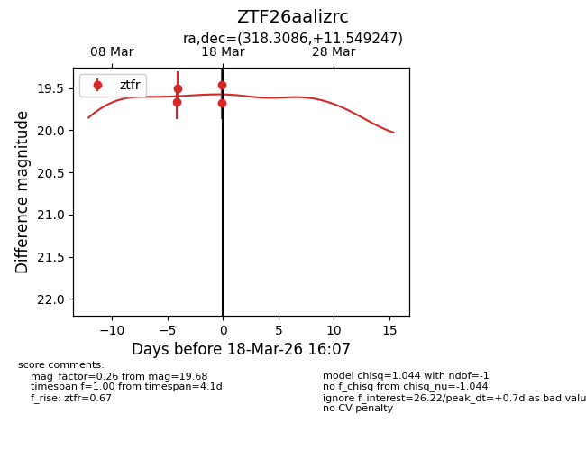
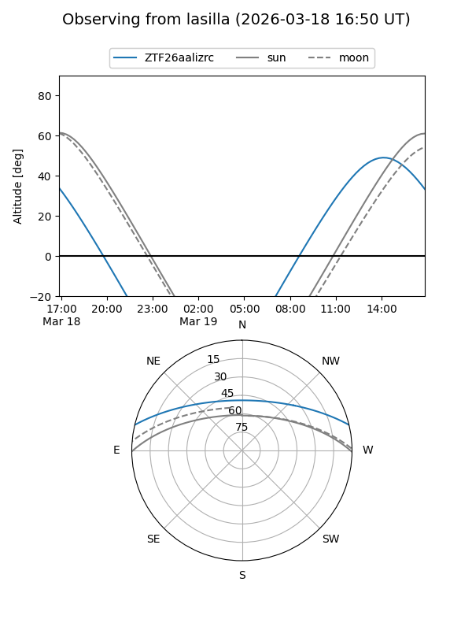
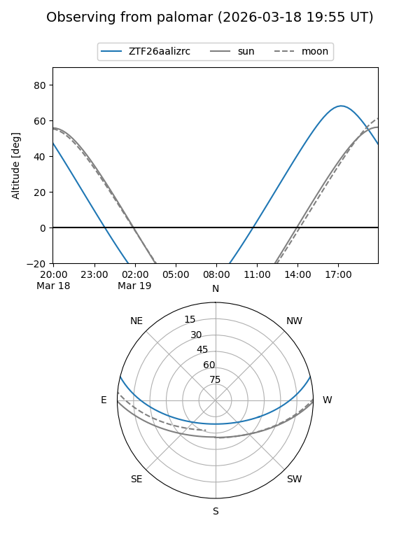
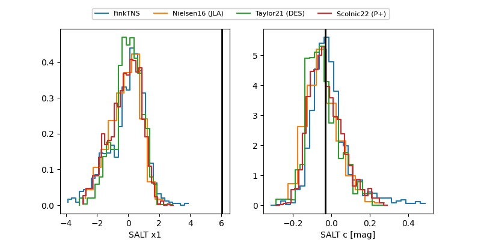

ZTF26aalizrc
Target ZTF26aalizrc at 2026-03-18 16:09
Aliases and brokers:
FINK: link
Lasair: link
ALeRCE: link
alt names
ZTF26aalizrc (ztf,fink_ztf)
Coordinates:
equatorial (ra, dec) = 318.3086,+11.54925
equatorial (HMS+DMS) = 21:13:14.05,+11:32:57.29
galactic (l, b) = (61.6498,-24.48348)
Flags:
Photometry:
last ztfr=19.68
4 ztfr detections
Lightcurve

Visibility


Additional plots
